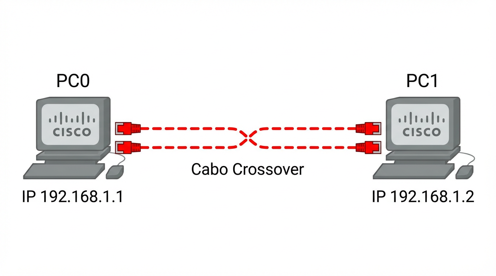

Configuração Passo a Passo
-
1Adicionar Dispositivos Arraste dois computadores PC-PT (PC0 e PC1) para a área de trabalho do Packet Tracer.
-
2Conexão Física Use o cabo Copper Cross-Over (tracejado) para conectar a porta FastEthernet0 do PC0 ao PC1.
-
3Configuração PC0 IP: 192.168.1.1
Máscara: 255.255.255.0 -
4Configuração PC1 IP: 192.168.1.2
Máscara: 255.255.255.0
Topologia e Validação

Teste de Conectividade
No prompt de comando do PC0, execute:
C:\> ping 192.168.1.2
Dica: Verifique se os triângulos na conexão ficaram verdes.